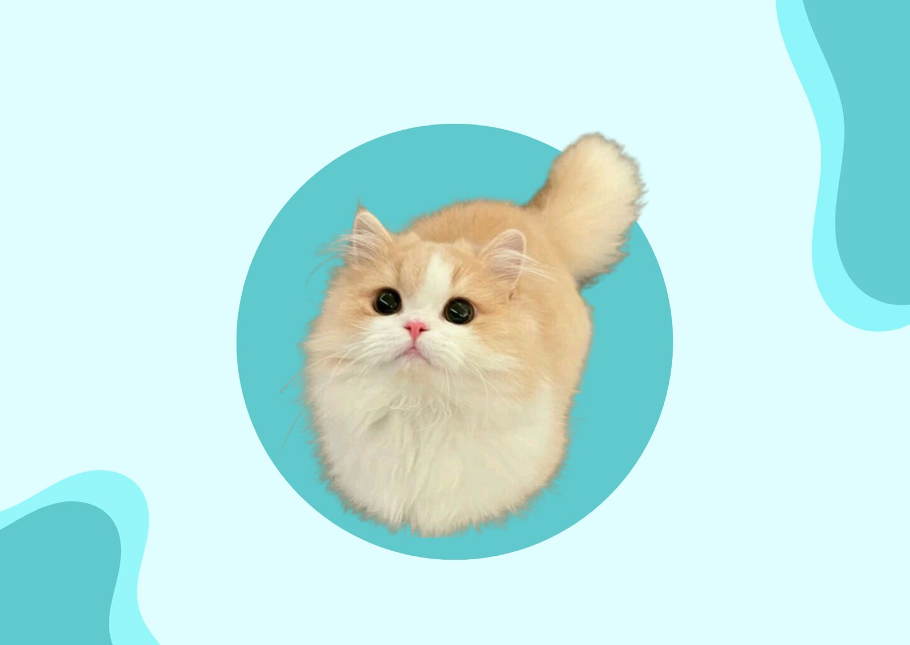

Doenças comuns
Leucemia Felina (FeLV), Rinotraqueite felina, Calicivirose ou calicivírus felino, Imunodeficiência felina (FIV), Panleucopenia felina e Peritonite infecciosa (PIF).

O que determina se um animal é doméstico ou não?
Um animal é doméstico quando vive em situação de domesticação, ou seja, um bicho que serve de propósito para o trabalho, que pode ser utilizado como fonte de alimento ou é um pet de estimação.
Isso quer dizer que na lista de animais domésticos entram cavalos, ovelhas, gados, cães, patos, galinhas, gatos, porcos, hamsters, abelhas e outros. Alguns bichos também estão em processo de domesticação, como no caso das cobras e sapos.
Por que nem todos os animais podem ser domesticados?
Existem alguns critérios para distinguir se um animal pode ser domesticado ou não. Segundo o autor do livro Armas, germes e aço, Jared Diamond, pouquíssimas espécies são adequadas.
Um exemplo é que animais domésticos não podem ser exigentes e devem ser capazes de encontrar comida perto da convivência humana. Dessa forma, o gado consegue comer gramas do chão, e cães conseguem comer comida de pessoas.
É importante pensar também que essas espécies precisam conseguir procriar em cativeiro e que alcancem a maturidade rapidamente. Elefantes, por exemplo, têm todas as possíveis características de um animal doméstico, mas demoram 15 anos até chegar à maturidade.
Animais domésticos também não pode ter tendência a entrar em pânico ou fugir, como no caso dos veados. Aliás, considerar a capacidade de socialização do bicho é um critério considerado, principalmente em animais de estimação.
Animais domésticos com maiores capacidades de adaptação
Entre os tipos de animais domésticos, ovelhas e cabras apresentam a maior diversidade de raças e vivem na maior variedade de habitats. Isso porque são encontradas de regiões tropicais a temperadas e podem enfrentar diferentes restrições climáticas.
Esses animais são criados em galpões, em prados cercados, em pastos abertos nas montanhas, em degraus áridos conduzidos por pessoas nômades e até em pastagens remotas, com quase nenhuma supervisão humana. O importante, no caso, é garantir que esses bichos sejam tratados adequadamente.